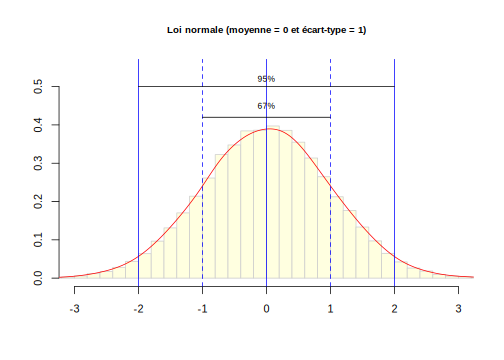
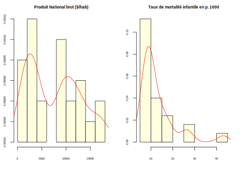
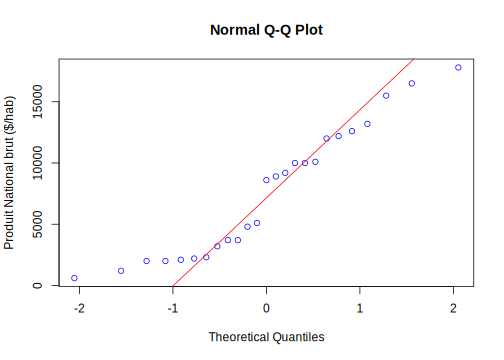
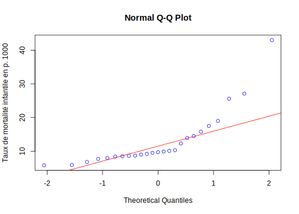
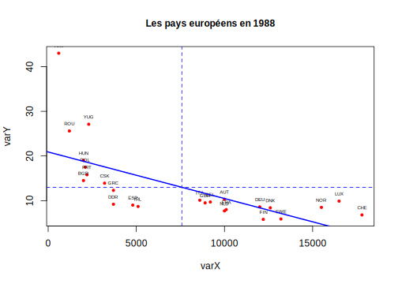
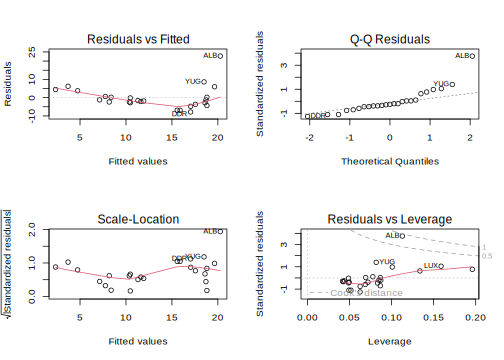
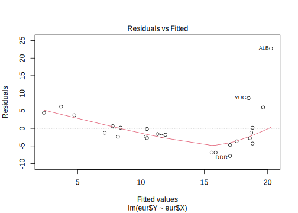
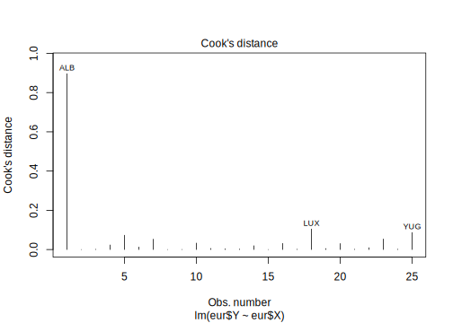

Partie 5 Régression

- Mise en place : Télécharger le dossier exo5 et décompressez le sur votre ordinateur. Puis ouvrez le projet R
exo5.Rprojdans Rstudio.
5.1 Préparation des données
5.1.1 Chargement du tableau principal
On charge notre bon vieux fichier des pays européens en 1988
don<-read.table(file = "resources/data/europe88/euro1988.csv",
sep = ";",
header = T)
don$BLOC<-as.factor(don$BLOC)
levels(don$BLOC)<-c("Capitaliste","Socialiste")
head(don)
#> PAYS BLOC PNB TMI ESP URB NAT MOR FEC JEU VIE SUP POP X
#> 1 ALB Socialiste 600 43.0 71 34 27 6 3.3 35 5 29 3.1 4825115
#> 2 AUT Capitaliste 10000 10.3 75 55 12 12 1.4 18 14 84 7.6 4299715
#> 3 BEL Capitaliste 9200 9.7 75 95 12 11 1.5 19 14 31 9.9 3636312
#> 4 BGR Socialiste 2000 14.5 72 65 13 11 2.0 21 11 111 9.0 5206070
#> 5 CHE Capitaliste 17800 6.8 77 61 12 9 1.5 17 14 41 6.6 3869378
#> 6 CSK Socialiste 3200 13.9 71 74 14 12 2.0 24 11 128 15.6 4487005
#> Y
#> 1 1684833
#> 2 2335579
#> 3 2667243
#> 4 1930219
#> 5 2243130
#> 6 25402815.1.2 Choix des deux variables à analyser
En dehors de BLOC et PAYS, on ne garde que les deux variables PNB et TMI que l’on renomme X et Y avec colnames() et que l’on convertit en type numérique général. Il suffira par la suite de modifier le choix des variables X et Y pour faire d’autres analyses.
eur<-don[,c("PAYS","BLOC","PNB","TMI")]
colnames(eur)<-c("PAYS","BLOC","X","Y")
eur$X<-as.numeric(eur$X)
eur$Y<-as.numeric(eur$Y)
head(eur)
#> PAYS BLOC X Y
#> 1 ALB Socialiste 600 43.0
#> 2 AUT Capitaliste 10000 10.3
#> 3 BEL Capitaliste 9200 9.7
#> 4 BGR Socialiste 2000 14.5
#> 5 CHE Capitaliste 17800 6.8
#> 6 CSK Socialiste 3200 13.9On prépare les titres
# Pour la version française
titre <- "Les pays européens en 1988"
nomX <- "Produit National brut ($/hab)"
nomY <- "Taux de mortalité infantile en p. 1000"
auteur <- "Claude Grasland, Université Paris Diderot, 2020"Comme on prévoit qu’il y aura des différences entre pays socialistes et capitalistes, on crée deux sous-tableaux
5.2 Forme de la relation
5.2.1 Vérification de la normalité de X et Y
La régression linéaire met en relation deux variables quantitatives X et Y dont on suppose que la distribution est normale (gaussienne) , c’est-à-dire unimodale et symérique.

On peut tester la normalité des disributions par inspection visuelle à l’aide de hist()

Les fonctions qqnorm() et qqline() sont plus précises …

Les fonctions qqnorm() et qqline() sont plus précises …

Mais la solution la plus précise est le test de Shapiro qui pose l’hypothèse H0 : la distribution est normale.
5.2.2 Visualisation de la forme de la relation
On peut faire un simple plot(X,Y). Mais on peut aussi créer pour cela une fonction personalisée adapté à ses préférences
monplot <- function (varX , varY, varN )
{
plot(varX,varY,
main = titre, # titre
cex.main = 1, # police du titre
cex = 0.6, # taille des symboles
pch = 19, # cercles pleins
col = "red") # couleur des symboles
text(varX,varY,varN,cex=0.5,pos=3) # nom des élément
abline(v=mean(varX),lty=2,lwd=1,col="blue") # moyenne X
abline(h=mean(varY),lty=2,lwd=1,col="blue") # moyenne Y
}Je peux désormais utiliser ma fonction monplot() !

Je peux décider de ne pas afficher le label des points.
5.2.3 Analyse de la corrélation
Je commence par celuler le coefficient de corrélation linéaire (r) et le pouvoir explicatif de X par rapport à Y (r2)
cor(eur$X,eur$Y) # coefficient de corrélation (r)
#> [1] -0.6584308
100*cor(eur$X,eur$Y)**2 # pouvoir explicatif (r2)
#> [1] 43.35312Puis, je teste la significativité de la corrélation linéaire …
cor.test(eur$X,eur$Y) # test de significativité (p-value)
#>
#> Pearson's product-moment correlation
#>
#> data: eur$X and eur$Y
#> t = -4.1955, df = 23, p-value = 0.0003459
#> alternative hypothesis: true correlation is not equal to 0
#> 95 percent confidence interval:
#> -0.8360497 -0.3558907
#> sample estimates:
#> cor
#> -0.6584308… et je la compare à celle du coefficient de corrélation de rang de Spearman
cor.test(eur$X,eur$Y, method="spearman") # test de significativité (p-value)
#> Warning in cor.test.default(eur$X, eur$Y, method = "spearman"): Cannot compute
#> exact p-value with ties
#>
#> Spearman's rank correlation rho
#>
#> data: eur$X and eur$Y
#> S = 4796.3, p-value = 1.094e-07
#> alternative hypothesis: true rho is not equal to 0
#> sample estimates:
#> rho
#> -0.8447182On peut conclure des analyses précédentes que :
- il existe une relation significative (p-value < 0.05)
- cette relation est positive (r > 0 )
- cette relation a un pouvoir explicatif moyen (r2 = 45%)
Mais …
- la relation est monotone mais non linéaire car le coefficient de Spearman (-0.90) est beaucoup plus fort que le coefficient de Pearson (-0.68) et également plus significatif
5.3 Ajustement du modèle
5.3.1 Hypothèses statistiques
Conditions a priori
- X et Y sont deux variables normales (gaussienne)
- il existe une corrélation significative entre X et Y (p< 0.05)
- X explique une part suffisamment forte de Y (r2 > 20% )
- Le nuage de point affiche une forme linéaire
- les points sont répartis de façon régulière le long du nuage de points
- Il n’y a pas de valeurs exceptionnelles susceptibles de perturber le calcul.
On charge le package car (companion to applied regession).
Méthode des moindres carrés ordinaire (MCO)
La droite \(y_i = a.x_i + b + \epsilon_i\) qui minimise la somme des carrés des écarts entre les valeurs observées \(y_i\) et les valeurs estimées \(\hat{y_i}\) a pour équation :
\(COV(X,Y) = \sum_{i=1}^k \sum_{j=1}^k (x_{i}-\bar{x})^2.(y_{i}-\bar{y})^2\)
\(a = COV(X,Y) / (\sigma_X)^2\)
\(b = \bar{y} - a.\bar{x}\)
Analyse de la variance
La somme des carré des écarts totale (\(SCE_{tot}\)) correspond à la variance de la variable à expliquer : \(SCE_{tot} = \sum_{i=1}^k (y_{i}-\bar{y})^2\)
La somme des carré des écarts résiduels (\(SCE_{err}\)) correspond à la somme des carrés des différences entre valeurs observées et estimées \(SCE_{error} = \sum_{i=1}^k (y_{i}-\hat{y})^2\)
Le pouvoir explicatif d’un modèle de régression correspond à la part de la variance de Y expliquée par X.
\(Var. expliquée = (SCE_{tot}-SCE_{res}) / SCE_{tot} = r(X,Y)^{2}\)
Vérifications a posteriori
Un modèle de régression n’est valide que si les résidus de ce modèle \(\epsilon_i = (y_i - \hat{y}_i)\) remplissent les conditions suivantes :
- Normalité de la distribution des résidus
- Absence d’autocorrélation des résidus
- Homogénéité de la variance des résidus
- Absence de valeur à fort effet de levier
Si ces quatre conditions ne sont pas remplies, les estimations de Y en fonction de X seront entâchées d’erreur et leur intervalle de confiance ne sera pas valable.
5.3.2 La fonction lm()
La fonction lm() ou lm est l’abbréviation de linear model permet d’effectuer la plupart des modèles de régression linéaire basés sur la méthode des moindres carrés ordinaire. Sa syntaxe est a priori très simple et renvoie les coefficients b et a du modèle de régression.
lm(eur$Y~eur$X)
#>
#> Call:
#> lm(formula = eur$Y ~ eur$X)
#>
#> Coefficients:
#> (Intercept) eur$X
#> 20.890709 -0.001042Mais en réalité lm() crée une liste de résultats que l’on a intérêt à stocker pour en examiner les composantes une à une.
monmodel<-lm(eur$Y~eur$X)
str(monmodel)
#> List of 12
#> $ coefficients : Named num [1:2] 20.89071 -0.00104
#> ..- attr(*, "names")= chr [1:2] "(Intercept)" "eur$X"
#> $ residuals : Named num [1:25] 22.73 -0.17 -1.6 -4.31 4.46 ...
#> ..- attr(*, "names")= chr [1:25] "1" "2" "3" "4" ...
#> $ effects : Named num [1:25] -64.96 26.96 -5.02 -8.69 2.2 ...
#> ..- attr(*, "names")= chr [1:25] "(Intercept)" "eur$X" "" "" ...
#> $ rank : int 2
#> $ fitted.values: Named num [1:25] 20.27 10.47 11.3 18.81 2.34 ...
#> ..- attr(*, "names")= chr [1:25] "1" "2" "3" "4" ...
#> $ assign : int [1:2] 0 1
#> $ qr :List of 5
#> ..$ qr : num [1:25, 1:2] -5 0.2 0.2 0.2 0.2 0.2 0.2 0.2 0.2 0.2 ...
#> .. ..- attr(*, "dimnames")=List of 2
#> .. .. ..$ : chr [1:25] "1" "2" "3" "4" ...
#> .. .. ..$ : chr [1:2] "(Intercept)" "eur$X"
#> .. ..- attr(*, "assign")= int [1:2] 0 1
#> ..$ qraux: num [1:2] 1.2 1.14
#> ..$ pivot: int [1:2] 1 2
#> ..$ tol : num 1e-07
#> ..$ rank : int 2
#> ..- attr(*, "class")= chr "qr"
#> $ df.residual : int 23
#> $ xlevels : Named list()
#> $ call : language lm(formula = eur$Y ~ eur$X)
#> $ terms :Classes 'terms', 'formula' language eur$Y ~ eur$X
#> .. ..- attr(*, "variables")= language list(eur$Y, eur$X)
#> .. ..- attr(*, "factors")= int [1:2, 1] 0 1
#> .. .. ..- attr(*, "dimnames")=List of 2
#> .. .. .. ..$ : chr [1:2] "eur$Y" "eur$X"
#> .. .. .. ..$ : chr "eur$X"
#> .. ..- attr(*, "term.labels")= chr "eur$X"
#> .. ..- attr(*, "order")= int 1
#> .. ..- attr(*, "intercept")= int 1
#> .. ..- attr(*, "response")= int 1
#> .. ..- attr(*, ".Environment")=<environment: R_GlobalEnv>
#> .. ..- attr(*, "predvars")= language list(eur$Y, eur$X)
#> .. ..- attr(*, "dataClasses")= Named chr [1:2] "numeric" "numeric"
#> .. .. ..- attr(*, "names")= chr [1:2] "eur$Y" "eur$X"
#> $ model :'data.frame': 25 obs. of 2 variables:
#> ..$ eur$Y: num [1:25] 43 10.3 9.7 14.5 6.8 13.9 9.2 8.6 8.4 9 ...
#> ..$ eur$X: num [1:25] 600 10000 9200 2000 17800 3200 3700 12000 12600 4800 ...
#> ..- attr(*, "terms")=Classes 'terms', 'formula' language eur$Y ~ eur$X
#> .. .. ..- attr(*, "variables")= language list(eur$Y, eur$X)
#> .. .. ..- attr(*, "factors")= int [1:2, 1] 0 1
#> .. .. .. ..- attr(*, "dimnames")=List of 2
#> .. .. .. .. ..$ : chr [1:2] "eur$Y" "eur$X"
#> .. .. .. .. ..$ : chr "eur$X"
#> .. .. ..- attr(*, "term.labels")= chr "eur$X"
#> .. .. ..- attr(*, "order")= int 1
#> .. .. ..- attr(*, "intercept")= int 1
#> .. .. ..- attr(*, "response")= int 1
#> .. .. ..- attr(*, ".Environment")=<environment: R_GlobalEnv>
#> .. .. ..- attr(*, "predvars")= language list(eur$Y, eur$X)
#> .. .. ..- attr(*, "dataClasses")= Named chr [1:2] "numeric" "numeric"
#> .. .. .. ..- attr(*, "names")= chr [1:2] "eur$Y" "eur$X"
#> - attr(*, "class")= chr "lm"Un résumé des résultats principaux est fourni avec summary() appliqué à l’objet créé par lm().
On obtient ainsi :
- l’équation de la droite Y = a.X+b
- la significativité et l’intervalle de confiance de a et b
- le pouvoir explicatif du modèle \(r(X,Y)^2\)
#>
#> Call:
#> lm(formula = eur$Y ~ eur$X)
#>
#> Residuals:
#> Min 1Q Median 3Q Max
#> -7.8351 -2.7982 -1.6039 0.6391 22.7345
#>
#> Coefficients:
#> Estimate Std. Error t value Pr(>|t|)
#> (Intercept) 20.8907087 2.2796125 9.164 3.86e-09 ***
#> eur$X -0.0010420 0.0002484 -4.196 0.000346 ***
#> ---
#> Signif. codes: 0 '***' 0.001 '**' 0.01 '*' 0.05 '.' 0.1 ' ' 1
#>
#> Residual standard error: 6.427 on 23 degrees of freedom
#> Multiple R-squared: 0.4335, Adjusted R-squared: 0.4089
#> F-statistic: 17.6 on 1 and 23 DF, p-value: 0.0003459On peut également analyser plus en détail la variance en appliquant anova() à l’objet créé par lm() ce qui monte la quantité de variance expliquée par X et la quantité de variance résiduelle. Le test de Fisher (Pr>F) détermine si le modèle est significatif et renvoie la même valeur que la p-value du coeff. de corrélation.
anova(monmodel)
#> Analysis of Variance Table
#>
#> Response: eur$Y
#> Df Sum Sq Mean Sq F value Pr(>F)
#> eur$X 1 727.09 727.09 17.602 0.0003459 ***
#> Residuals 23 950.05 41.31
#> ---
#> Signif. codes: 0 '***' 0.001 '**' 0.01 '*' 0.05 '.' 0.1 ' ' 1On peut extraire de l’objet créé par lm() les valeurs estimées de Y et les résidus c’est-à-dire les erreurs d’estimation.
eur$Y_estim<-monmodel$fitted.values
eur$Y_resid<-monmodel$residuals
head(eur)
#> PAYS BLOC X Y Y_estim Y_resid
#> 1 ALB Socialiste 600 43.0 20.26548 22.7345189
#> 2 AUT Capitaliste 10000 10.3 10.47025 -0.1702487
#> 3 BEL Capitaliste 9200 9.7 11.30389 -1.6038855
#> 4 BGR Socialiste 2000 14.5 18.80662 -4.3066167
#> 5 CHE Capitaliste 17800 6.8 2.34229 4.4577101
#> 6 CSK Socialiste 3200 13.9 17.55616 -3.6561615On peut tracer la droite de régression avec abline()

On peut enfin analyser a posteriori la qualité de la régression avec plot().

5.4 Diagnostics du modèle
5.4.1 Diagnostic 1 : Indépendance des résidus ?
L’objectif est de savoir si les résidus se répartissent régulièrement de part et d’autre de la droite de régression tout au long de celle-ci. Si c’est bien le cas le graphique residuals Vs Fitted généré par plot(monmodel,1) devrait donner une droite horizontale :

On peut tester statistiquement l’indépendance des résidus à l’aide du test de Durbin-Watson qui mesure si deux valeurs successives ont des résidus proches. L’indépendance des résidus est rejetée si p-value < 0.05
durbinWatsonTest(monmodel)
#> lag Autocorrelation D-W Statistic p-value
#> 1 -0.03883526 1.455678 0.178
#> Alternative hypothesis: rho != 0Ici on trouve p-value > 0.05 donc les résidus sont indépendants.
5.4.2 Diagnostic 2 : Normalité des résidus ?
L’objectif est de savoir si les résidus ont une distribution normale Si c’est bien le cas le graphique généré par plot(monmodel,2) devrait donner une droite oblique :
On peut tester statistiquement la normalité des résidus à l’aide du test de Shapiro-Wilk. Les résidus sont normaux si p-value > 0.05
shapiro.test(monmodel$residuals)
#>
#> Shapiro-Wilk normality test
#>
#> data: monmodel$residuals
#> W = 0.81605, p-value = 0.0004263Ici on trouve une p-value très clairement inférieure à 0.05 donc la distribution des résidus n’est pas gaussienne.
5.4.3 Diagnostic 3 : Homogénéité des résidus ?
L’objectif est de savoir si la variance des résidus est constante, c’est-à-dire si il s’écarte environ de la même distance tout au long de la droite . Si c’est bien le cas le graphique généré par plot(monmodel,3) devrait donner une droite horizontale
On peut tester statistiquement l’homogénéité des résidus à l’aide du test de Breush-Pagan. L’hypothèse d’homogénéité est rejetée si la p-value est inférieure à 0.05.
ncvTest(monmodel)
#> Non-constant Variance Score Test
#> Variance formula: ~ fitted.values
#> Chisquare = 9.429701, Df = 1, p = 0.002135Ici, la p-value est inférieure à 0.05 donc les résidus ne sont pas homogènes.
5.4.4 Diagnostic 4 : Absence de valeur exceptionnelles ?
L’objectif est de savoir s’il existe des valeurs qui exercent une influence exceptionnelle sur les résultats de la régression. On peut reprérer ces valeurs de plusieurs manières, notamment à l’aide de la distance de Cook générée par plot(monmodel,4).O n repère le cas particulier de l’Albanie :

Le test statistique de Bonferroni permet de déterminer s’il existe des valeurs exceptionnelles avec une p-value < 0.05.
outlierTest(monmodel, labels = eur$PAYS)
#> rstudent unadjusted p-value Bonferroni p
#> ALB 5.905381 6.0791e-06 0.00015198Ici, on doit conclure qu’il existe au moins une valeur exceptionnelle, l’Albanie, susceptible de fausser les conclusions du modèle de régression.